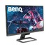
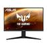
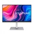
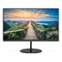
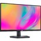

|  |
Benq |
MODELIS: 9H.LKALB.QBE |
Gigabyte Gaming Monitor G27Q-EK 27 ", QHD, 2560 x 1440 pixels |
457 |
|  |
Asus |
MODELIS: CM-9020001-PE |
SALE OUT. GIGABYTE AORUS FI27QP-EK MONITOR 27" 2560 x 1440/350cd/m2/1ms/12M:1/ HDMI,
Display Port Gigabyte Gaming AORUS FI27QP-EK 27 ", IPS, QHD, 2560 x 1440 pixels, 1 ms,
350 cd/m², Black, Warranty 12 month(s), REFURBISHED, HDMI ports quantity 2
|
654 |
|  |
Asus |
MODELIS: 210-AXKW |
HP E27q G4 LED monitorius su IPS technologija | 27 colių | 2560x1440@60Hz, 16:9 |
Reakcijos laikas: 5ms | Peržiūros kampas: 178°/178° | Jungtys: VGA, HDMI, DisplayPort,
USB | Tilt, height-adjustable, pivot, swivel, VESA
|
412 |
|  |
Samsung |
MODELIS: 210-AYUK_5Y |
iiyama G-Master G2740QSU Black Hawk GAMING LED monitorius su garsiakalbiais ir IPS
technologija | 27 colių | 2560x1440@75Hz, 16:9 | Reakcijos laikas: 1ms | Peržiūros
kampas: 178°/178° | Jungtys: HDMI, DisplayPort, USB, Headphone | Tilt, VESA, Flicker
free, Kensington-lock
|
350 |
|  |
LG |
MODELIS: XUB2796QSU-B1 |
Iiyama 24 LED XUB2493QSU-B1 - 24 ETE IPS WQHD |
250 |